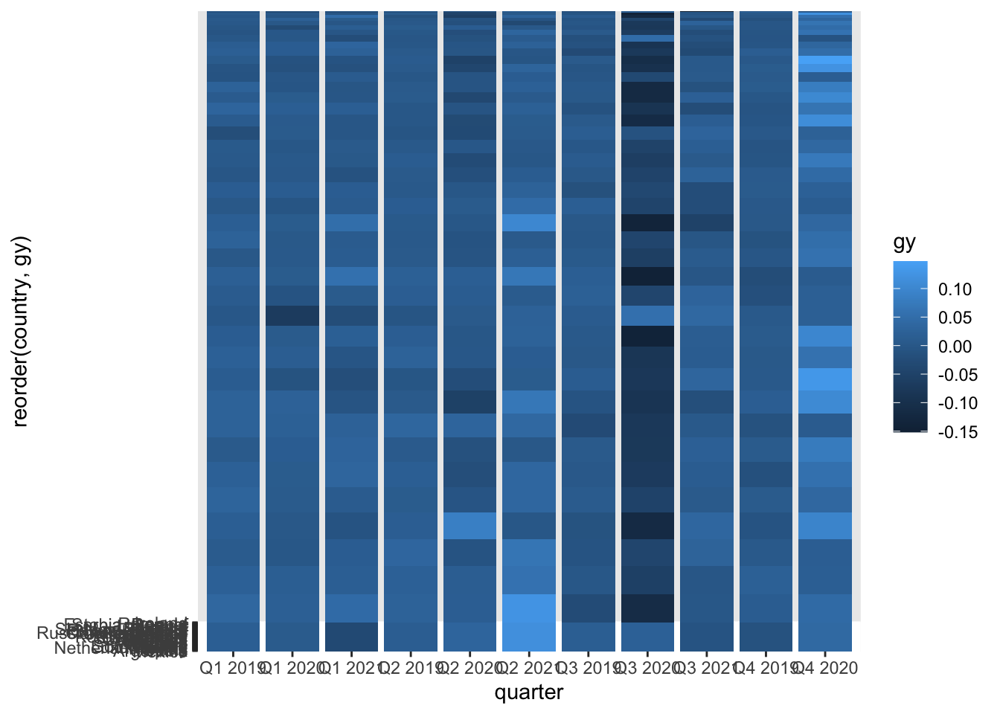

Homework #4
Gabrielle Scibelli
1 gganimate
The following link is for the data that is used in this Section.
## X date quarter country
## Min. : 1 Min. :2019 Length:473 Length:473
## 1st Qu.:119 1st Qu.:2020 Class :character Class :character
## Median :237 Median :2020 Mode :character Mode :character
## Mean :237 Mean :2020
## 3rd Qu.:355 3rd Qu.:2021
## Max. :473 Max. :2022
## gdp capital labor_force
## Min. : 2421 Min. : 563 Min. : 253.9
## 1st Qu.: 47866 1st Qu.: 8957 1st Qu.: 2722.4
## Median : 282302 Median : 61910 Median : 4927.7
## Mean : 21185249 Mean : 5475110 Mean : 16157.4
## 3rd Qu.: 1106472 3rd Qu.: 267118 3rd Qu.: 19816.8
## Max. :476244600 Max. :143147100 Max. :164323.0
## y k sk
## Min. : 5.658 Min. : 1.055 Min. :0.1055
## 1st Qu.: 12.639 1st Qu.: 2.605 1st Qu.:0.1983
## Median : 29.273 Median : 6.169 Median :0.2201
## Mean : 909.788 Mean : 223.877 Mean :0.2232
## 3rd Qu.: 174.772 3rd Qu.: 36.854 3rd Qu.:0.2436
## Max. :16950.838 Max. :5134.262 Max. :0.9518
## gy gk gn
## Min. :-0.151718 Min. :-0.728954 Min. :-0.2123020
## 1st Qu.:-0.007539 1st Qu.:-0.023245 1st Qu.:-0.0066044
## Median : 0.004869 Median : 0.003978 Median : 0.0014214
## Mean : 0.002859 Mean : 0.017283 Mean : 0.0009701
## 3rd Qu.: 0.017167 3rd Qu.: 0.030505 3rd Qu.: 0.0084801
## Max. : 0.147675 Max. : 3.110522 Max. : 0.1911472
## ga year qt
## Min. :-2.9529489 Min. :2019 Length:473
## 1st Qu.:-0.0155115 1st Qu.:2019 Class :character
## Median : 0.0007503 Median :2020 Mode :character
## Mean :-0.0098513 Mean :2020
## 3rd Qu.: 0.0172614 3rd Qu.:2021
## Max. : 0.2315592 Max. :2021
- geom_tile() and geom_text()
1.1 ggiraph
The following link is for the data that is used to generate the figure in this Section.
## speed dist
## Min. : 4.0 Min. : 2.00
## 1st Qu.:12.0 1st Qu.: 26.00
## Median :15.0 Median : 36.00
## Mean :15.4 Mean : 42.98
## 3rd Qu.:19.0 3rd Qu.: 56.00
## Max. :25.0 Max. :120.00The effect of the COVID-19 Pandemic on economic growth is shown in the animation above.
You can also embed plots, for example:

Note that the echo = FALSE parameter was added to the code chunk to prevent printing of the R code that generated the plot.